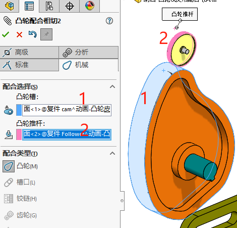
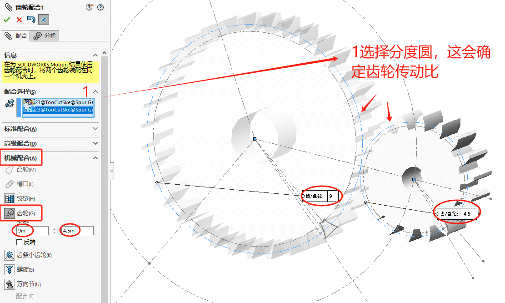
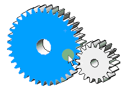
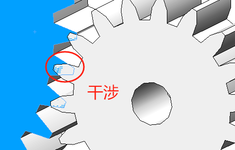
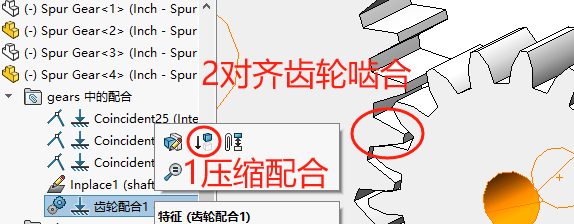

机械配合
凸轮
!
槽口
铰链
齿轮
齿轮的配合选择，一般需要选择齿轮的分度圆。应该分度圆会自动算出两齿轮的传动比（即角速度比，满足转动时齿轮能啮合正确）
不过有些模型是没有显示分度圆的（似乎大部分情况是没的），此时则可以选择两齿轮自身的轴孔半径。这时的半径比率就可能不对。需要手动修改配合比率满足转动时齿轮能啮合正确
效果展示
再者还有一种情况，就是做【齿轮】配合时，如果两齿轮已经存在干涉情况。那配合后的动作也是一直会干涉。（齿轮配合并无对齐功能，这是联动功能而已。所以一开始错了，联动的动作也会一起错）
这时你可以通过“压缩配合”或“配合前”先对齐，消除干涉问题。
